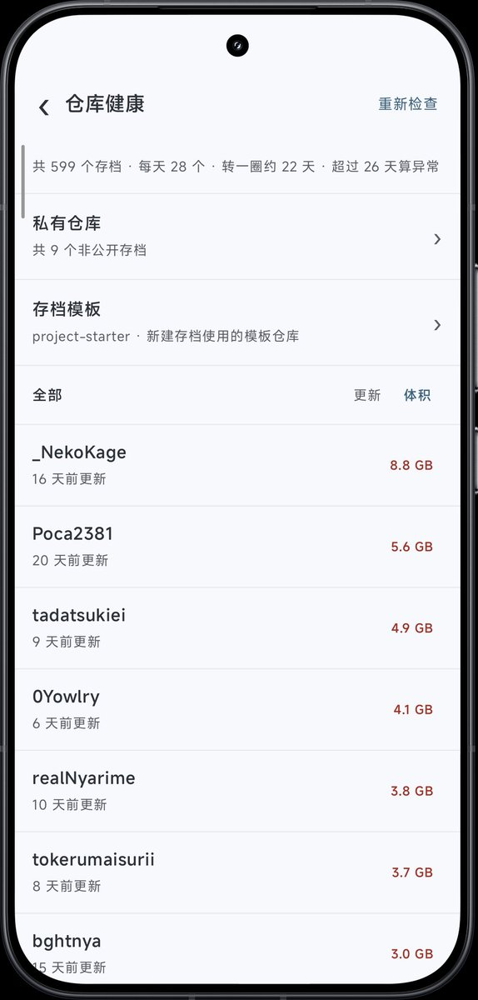

为什么是“我们”…我啥也不懂啊😨对不起对不起对不起…
咱好崇拜你的🥹…对电子文盲的咱来说你俩说的一切在我眼里都是讨论魔法，窝一个字都看不懂…所以没有任何想象只有崇拜，无论怎样都很厉害啊…
咱咱咱很崇拜你很感谢你…大佬你为我做的存档起过一次很重要的用处，之前都没有来感谢你，现在想说声谢谢…谢谢你，窝会一直记得的…
所以看到有人有类似的想法就超级兴奋的想要拉过来给你看…可是，是不是破坏了你的心情呜呜呜，窝好愧疚，窝怎么这么笨，真的对不起…好难受啊，求求原谅，哭哭😭

咱好崇拜你的🥹…对电子文盲的咱来说你俩说的一切在我眼里都是讨论魔法，窝一个字都看不懂…所以没有任何想象只有崇拜，无论怎样都很厉害啊…
咱咱咱很崇拜你很感谢你…大佬你为我做的存档起过一次很重要的用处，之前都没有来感谢你，现在想说声谢谢…谢谢你，窝会一直记得的…
所以看到有人有类似的想法就超级兴奋的想要拉过来给你看…可是，是不是破坏了你的心情呜呜呜，窝好愧疚，窝怎么这么笨，真的对不起…好难受啊，求求原谅，哭哭😭

@fcjdfb @Rain_Antar1121 这个是有解决方法的，同人两个用户名这个问题早就有过处理，只是新增一个文件进行抓取，不会出现断裂的问题。
github仓库存储大小这个我也考虑到过，管理端对这个有过统计，有一些处理方法不过并不完美。
我做的细节处理远比你们想象的多。 https://t.co/QsQtayuW2l
github仓库存储大小这个我也考虑到过，管理端对这个有过统计，有一些处理方法不过并不完美。
我做的细节处理远比你们想象的多。 https://t.co/QsQtayuW2l